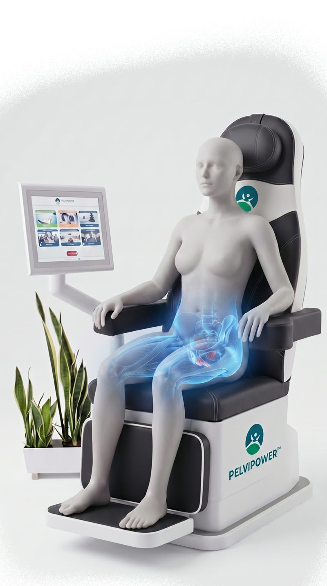

Ein kurzer, geführter Checkup – diskret, unverbindlich und auf Sie zugeschnitten. Für ein erstes Gefühl, welche Themen für Sie persönlich relevant sein könnten.*
* Kein Ersatz für eine medizinische Diagnose.